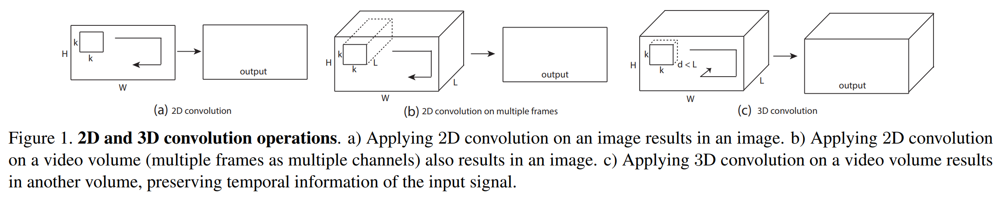
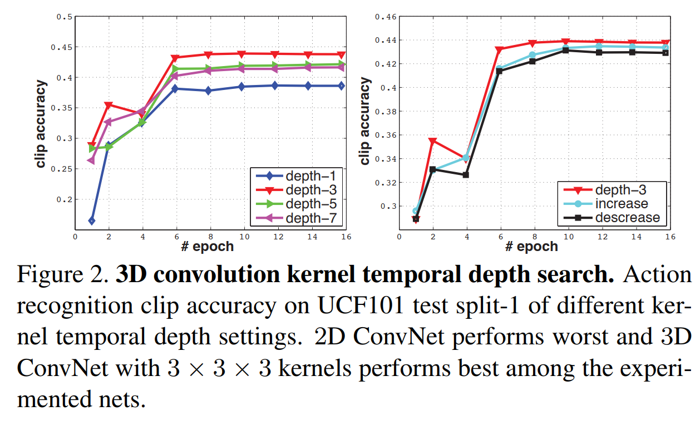
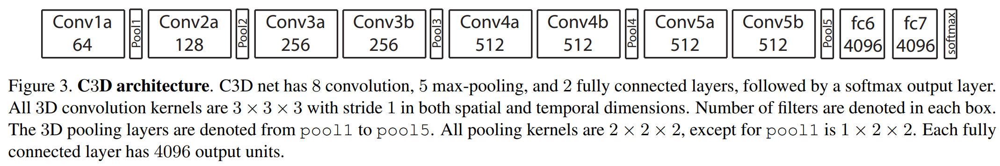

文章目录
Learning Spatiotemporal Features with 3D ConvNets
1. Intro
video feature descriptor 需要满足下面几个性质：
- 通用性好，从而可以表征各种视频数据，并且提取的特征具有足够的判别性，即discriminative；
- 特征更加紧凑，这样有助于下游的数据处理、检索等等；
- 计算高效，如今视频数据很多，对这些视频的特征提取应该足够高效；
- 实现起来简单，不需要过多的预处理或计算。
3. 3D ConvNet
3.1 3d卷积
其实在2d卷积和2d池化中都存在一个问题——我们忽略了输入tensor沿着channel维度的关系，在2d conv和2d pooling时，我们都默认卷积核的channel数和input tensor的channel数相等，这样就丢失了temporal的信息！如下图所示，在视频这种同时包含motion信息的数据中，我们更应该同时考虑 spatial-temporal特征信息。

假设输入的video clip尺寸为$c * l * h * w$，其中c是通道数，l是帧的数量，h和w是帧的高度和宽度，再假设卷积核的尺寸为$d * k * k$，其中d是卷积核的depth，k是卷积核的spatial size。
3.2 卷积核的depth
作者对不同的卷积核depth进行了对比实验，主要有两种架构：
- 所有3d-conv的 kernel temporal depth保持一致，例如d-1、d-3、d-5，d-1等效于在输入的每个channel上做一次2d-conv；
- kernel temporal depth不一致，例如3-3-5-5-7或者7-5-5-3-3。

结果显示homogenous d-3结果最好。
3.3 网络结构

4. 效果
最后作者做了大量的验证实验来验证C3D模型是可以满足最开始所要求的性质的，详细参加论文，本工作已开源至 >>C3D主页<<。
参考文献
- Du Tran et.al, Learning Spatiotemporal Features with 3D Convolutional Networks, ICCV, 2015